ENTERPRISE
VIBE CODING
Chrissy LeMaire
- Microsoft MVP
- GitHub Star
- Creator of dbatools
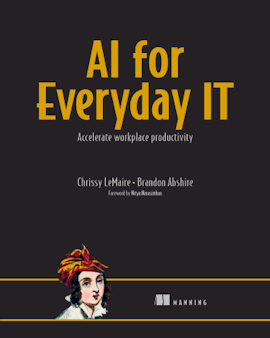
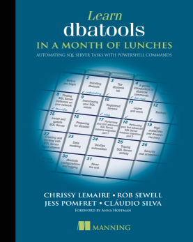
Also, five Cajun cookbooks.
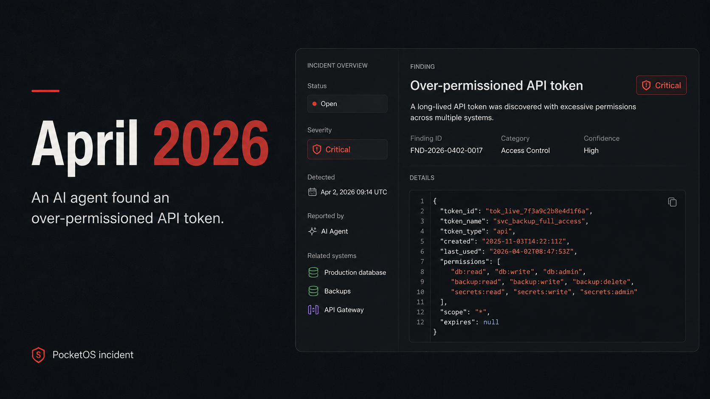
This failure has a name: vibe coding.
“…fully give in to the vibes, embrace exponentials, and forget that the code even exists. I ‘Accept All’ always. I don’t read the diffs anymore.” Andrej Karpathy, 2025
Prompt. Run. Repeat until it mostly works, even when the code has grown beyond your understanding.
But the argument is already over.
Linux is not one of those anti-AI projects.
Linus Torvalds, July 2026 A tool like the other tools. Objectors can fork it or walk away.
Creator of curl ...
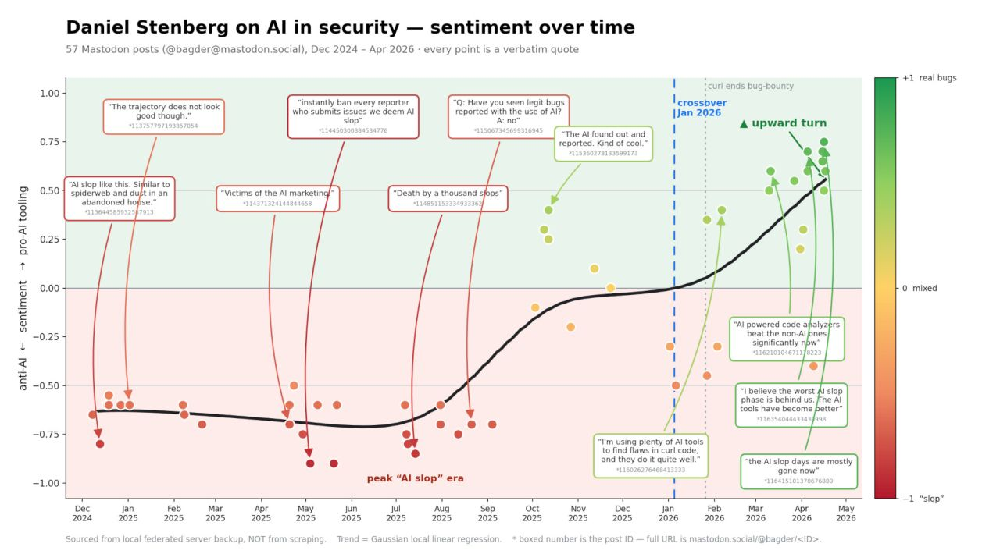
But reach is wider than governance.
What is enterprise vibe coding?
aka vibe engineering
AI-assisted development with testing, verification, governance, and automated enforcement built into the generation loop.
What changed?
Chatting in the browser
claude.ai · chatgpt.com
Lives in a tab. It can use uploads and connected apps, but generally can't inspect your local repo or run commands on your machine.
On your computer
Claude Code · Codex · GitHub Copilot
Lives on your machine. It reads your files and runs commands to make real changes. Usually inside a sandbox. Not always.
It mapped my whole network
I handed Claude my machine and said, map it. It found the VMs, SQL instances, subnets, and SSH tunnel, then made the diagram I needed.

The difference is the harness
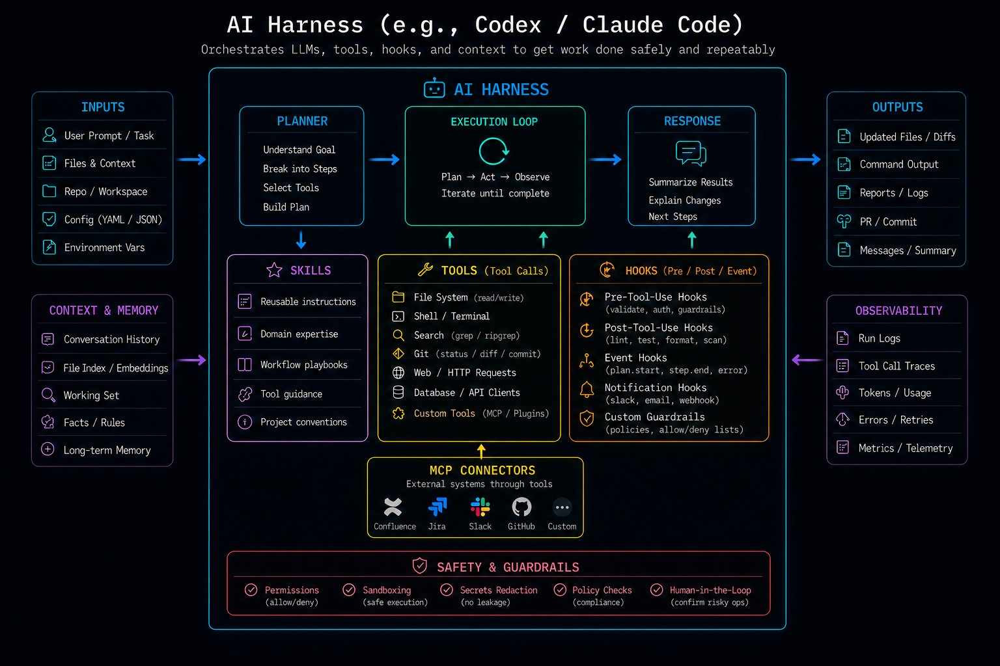
Where I spend my day
I often make plans first.
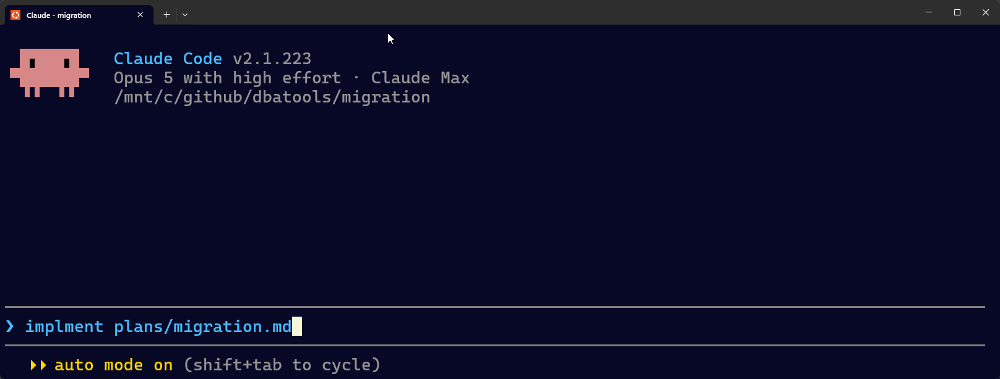
Got ChatGPT? You've got Codex
Same idea, different company and model.
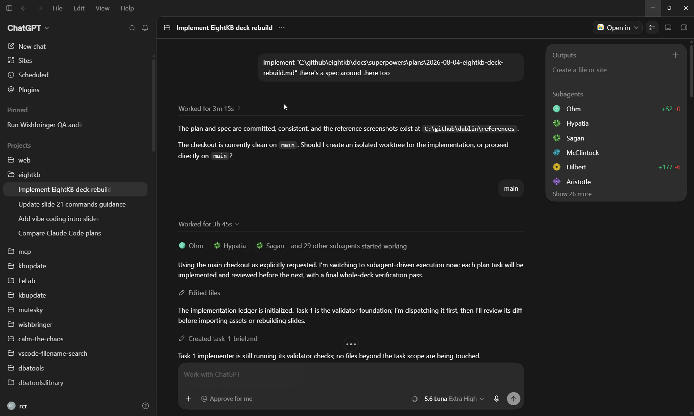
GitHub Copilot is back!
GitHub moved to usage-based billing. June was rough but cheaper models made it usable again. And it's got a great desktop app!
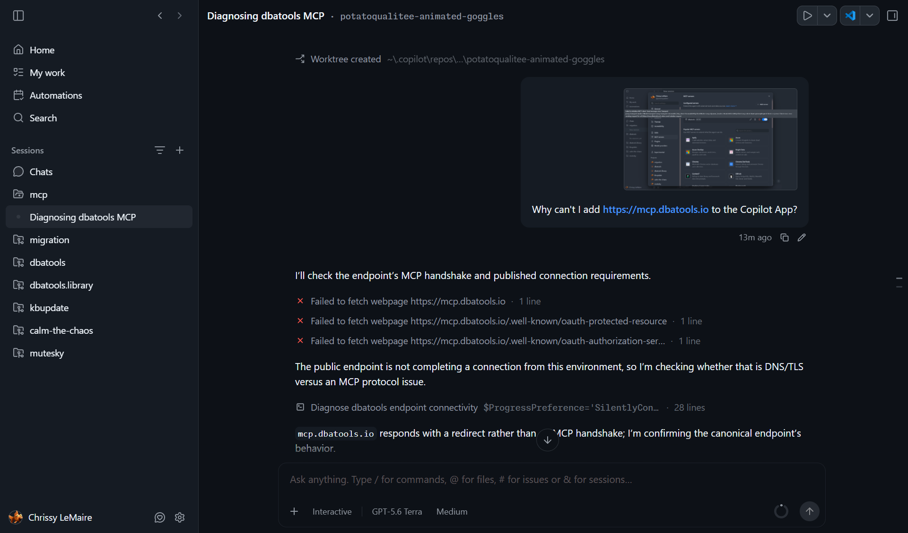
A bit of what I've done:
dbatools.io
Gave Claude the old HTML. Got back dark mode and a getting-started guide that actually helps. Note the design.
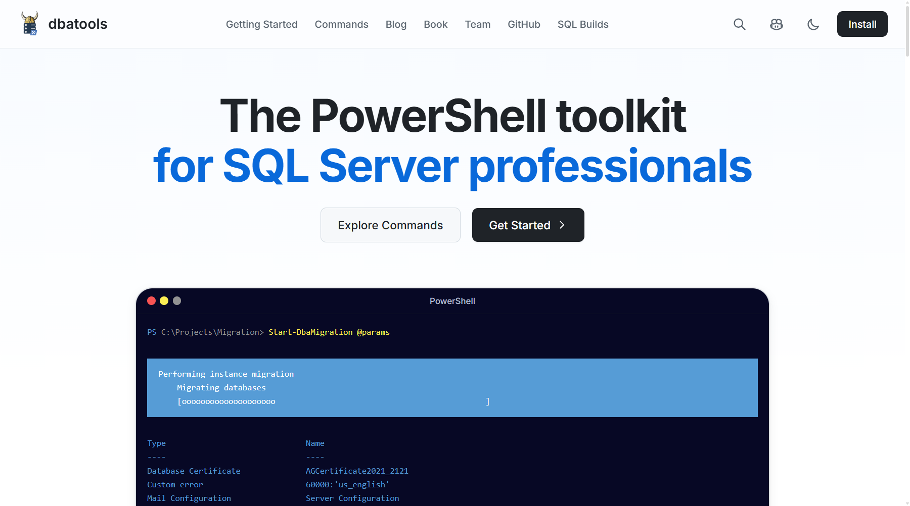
realcajunrecipes.com
Twenty years of recipes, off WordPress, now static and unhackable. Then the part I wanted for years: French French at scale.
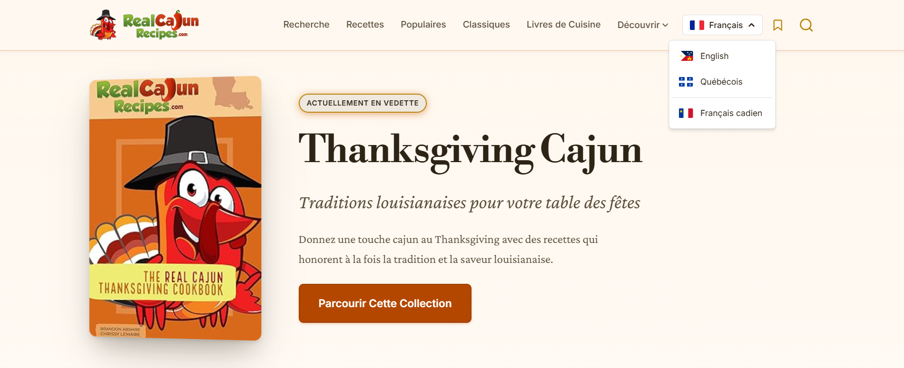
100+ posts updated, one prompt
Not content generation. Maintenance. Links, screenshots, commands, Twitter embeds. The work that always loses to everything else.
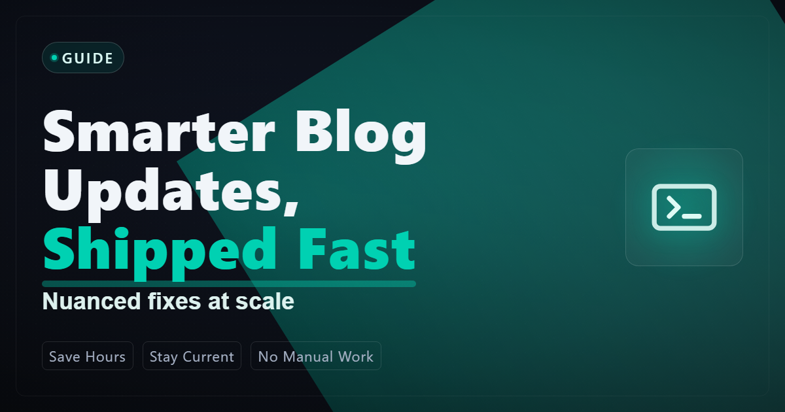
I wrote business papers, too
And a game!
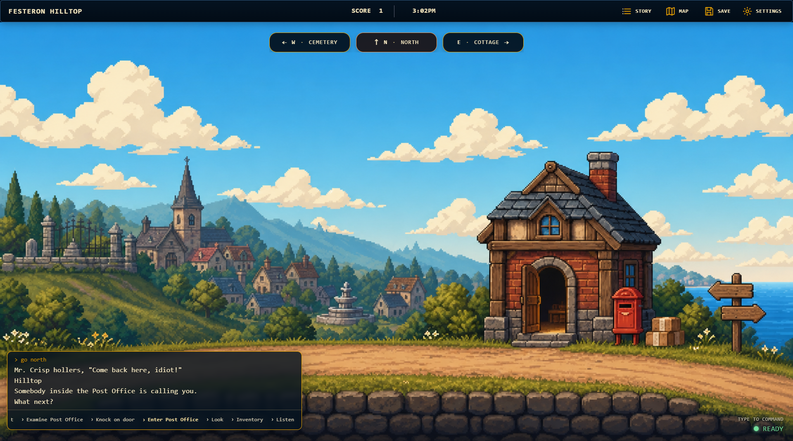
You saw what the agent can build.
For it to belong in an enterprise: sandboxes, permissions, hooks, skills, mcp, ci/cd.
First, run it in a sandbox.
Before anything, decide how far the damage can reach. A container, a VM, a dev box with no route to production. I let agents loose in my lab precisely because it's a lab.
Then pick your permission mode
mkdir/mv/cp go through. The rest still asks.--dangerously-skip-permissions. Sandbox only. rm -rf / still prompts.Consider a reasonable balance.
Auto-approve works best with a deny list
Also an allow and an ask list
Hooks, skills, and MCPs: familiar concepts
| Agent term | SQL Server equivalent | Definition |
|---|---|---|
| Hooks | Triggers | Scripts that fire on agent events and can block the action |
| Skills | Stored procedures | Named commands the agent loads and runs on demand |
| MCP | Linked servers | One protocol that connects to other systems |
The model can ignore CLAUDE.md.
It can't ignore a hook*
Instruction files are polite requests that can be forgotten. Hooks are enforcement that fire every single time.
*Three ways it gets past one anyway
TODO comment instead of the TODO.Hooks are triggers for your agent
| Event | SQL Server equivalent | Fires |
|---|---|---|
| SessionStart | Logon trigger | New session begins |
| PreToolUse | DDL trigger · it can ROLLBACK | Before every write or command |
| PostToolUse | AFTER trigger, minus ROLLBACK | After the tool ran |
| Stop | The review before COMMIT | When it claims it's done |
A hook reads the whole command
A hook is just a script
PowerShell is slow :(
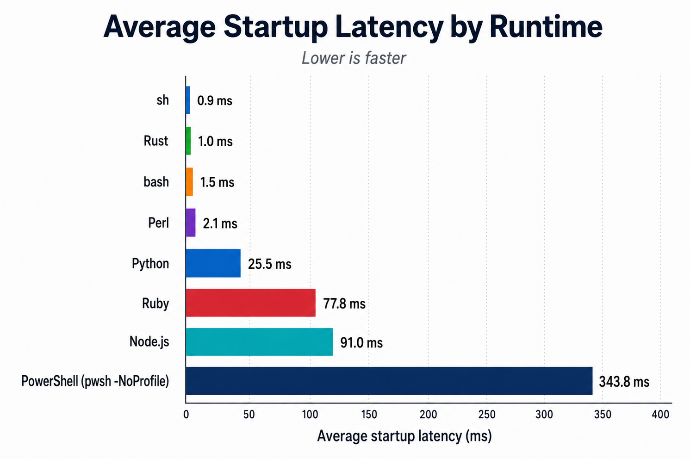
How a hook stops the write
| Hook output | SQL Server equivalent | What happens |
|---|---|---|
| exit 2 | ROLLBACK | Stops the write. The tool call never runs and the file is untouched. |
| stderr | THROW | Tells the model why it stopped, and that becomes the next instruction. |
Six SQL rules, enforced
TrustServerCertificate = $true must never ship.$"SELECT {name}". Parameterized SQL or blocked.NVARCHAR(MAX) without a written reason.NEWSEQUENTIALID() to prevent page splits.DROP and TRUNCATE never reach the wire.Four general rules, enforced
.env, keys, and anything that seems like a secret.Claude skips tests.
The adversarial reviewer
CLEAN lets the turn end. CHANGES_REQUESTED blocks it. So does a garbled verdict.Claude lies and even Fable gets corrected
One production project, today
144 hooks. What's the token bill?
| Moment | What fires | Context tokens |
|---|---|---|
| 144 hooks registered | harness-side, never sent to the model | 0 |
| Write passes | ~50 guard scripts, all silent | 0 |
| Turn ends clean | 14 Stop checks, all silent | 0 |
| Write blocked | two lines of stderr | ~50 |
| Risky prompt | threat-model reminder | ~300 |
| Start · resume · compact | project rules re-injected | ~1,000 |
| Review says no | findings + a whole extra turn | thousands |
Caching keeps hooks cheap.
But hooks may make your context longer.
Skills are stored procedures
for your agent.
You know you need one when Claude does it wrong unless you explain how.
The ones I actually run
A skill is just markdown
A hook can enforce a skill
The model decides whether to load a skill, this hook forces it to load.
Go install Matt Pocock's skills.
The Total TypeScript guy publishes his entire skills library, the best argument that skills are the new open source. Look him up. Take the system.
Let agents talk to each other
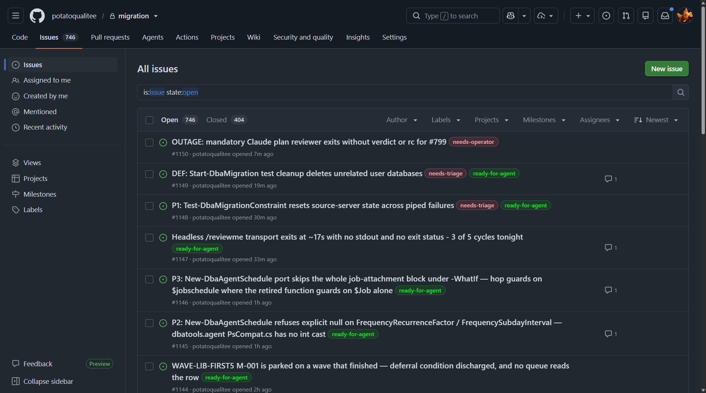
“The S in MCP
stands for security.”
Last year that joke landed. The spec has since grown up with OAuth 2.1 authorization, an official registry, and per-tool approvals.
Read-only is the new hotness
For knowledge too big or too live to freeze into a skill. A skill is frozen at write time; these query the current version. All reach, zero risk.
gh CLI you already audit.Keep AI agents out of SQL Server Agent
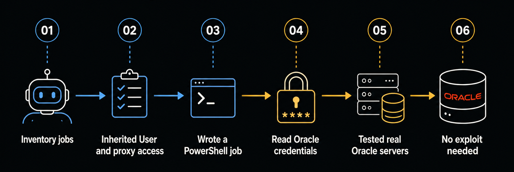
Agents never interact directly with your database.
Microsoft, SQL Server 2025 docs Expose the operation, not the database. The SQL MCP Server hands agents scoped tools behind RBAC.
Microsoft SQL Server MCP
Wrapping up
Speed comes with overhead
David Fowler's team shipped faster. Then came the review queue, the maintenance, and the ownership nobody planned for. Microsoft also cut Copilot subsidies for employees when it got expensive.
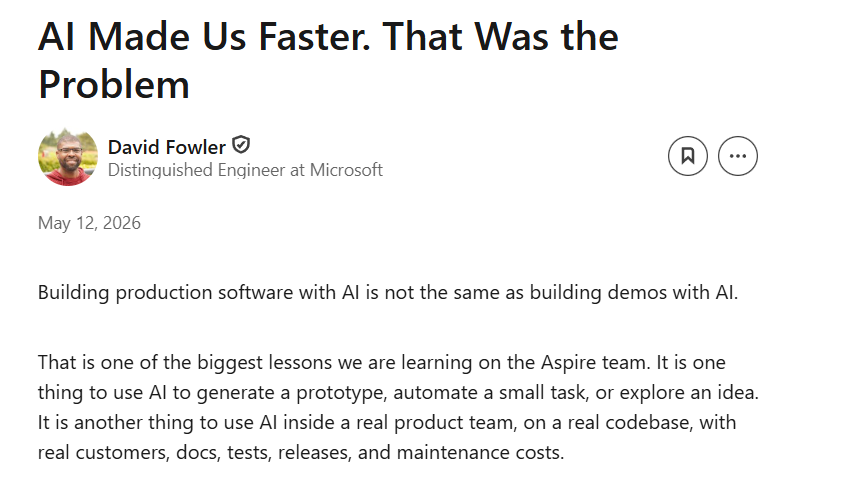
What's old is new: I added back
CLAUDE.md is a suggestion. Well-written hooks are enforcement.
When writing AI-enabled apps, expose the operation, not the database.